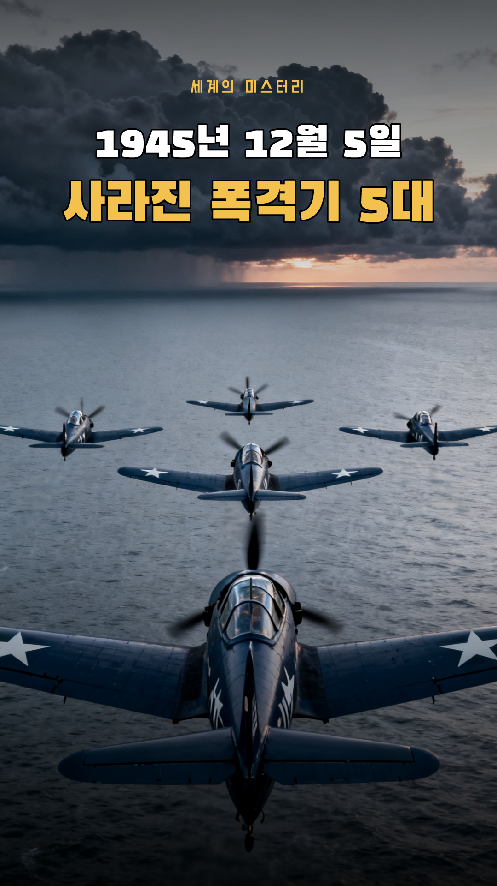
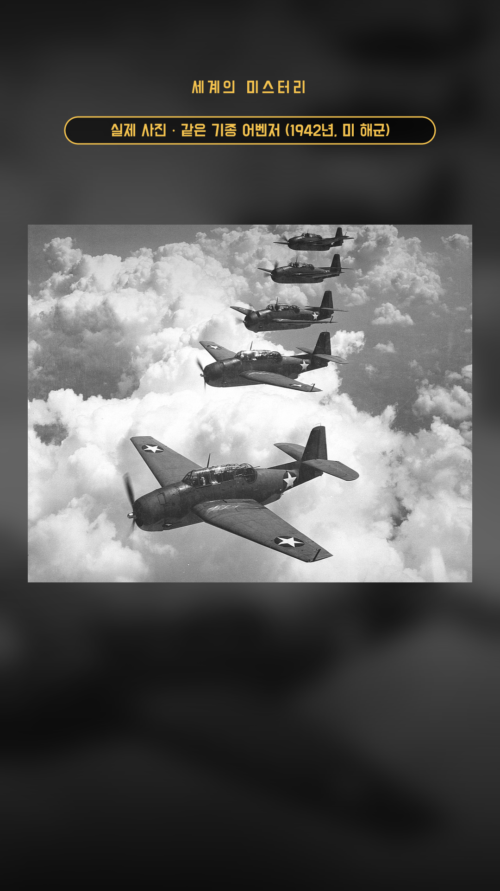
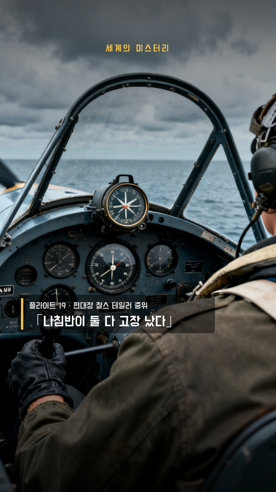
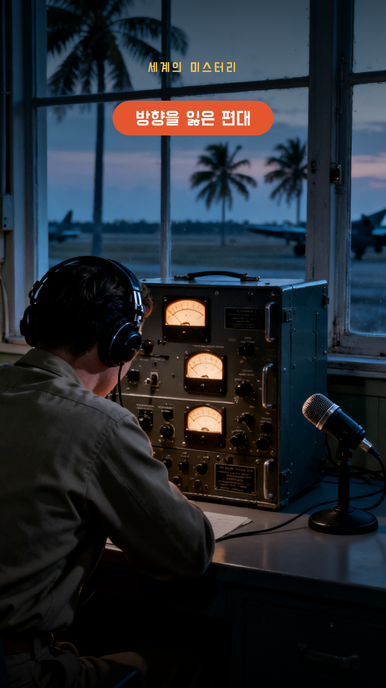
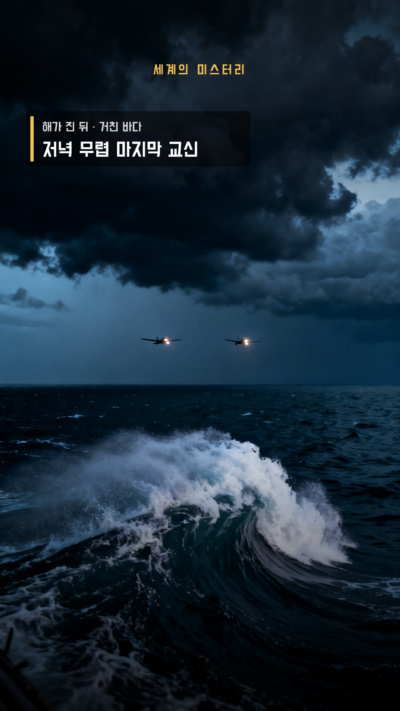
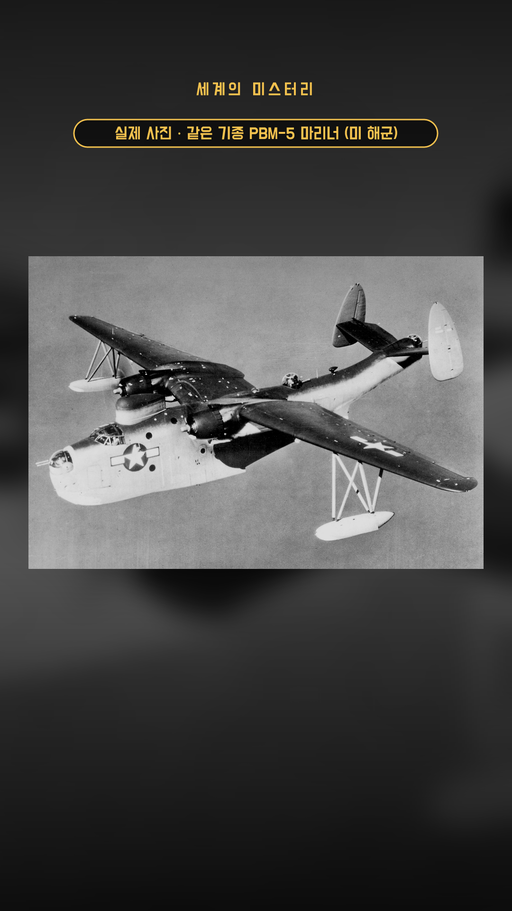
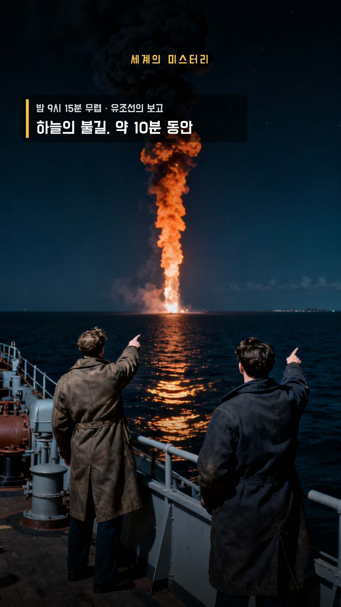
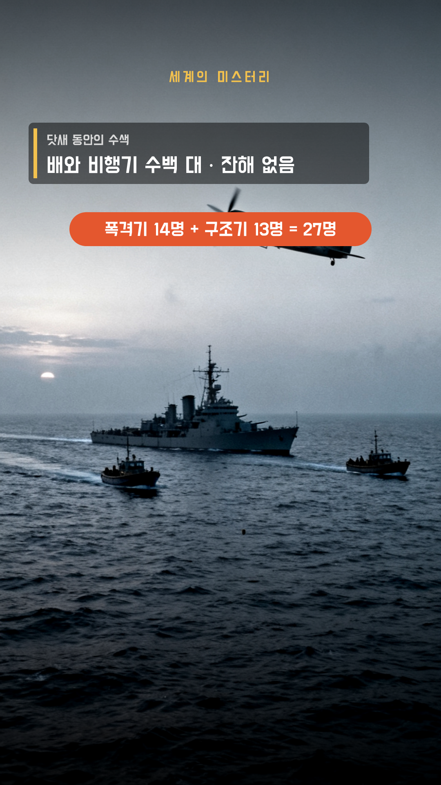
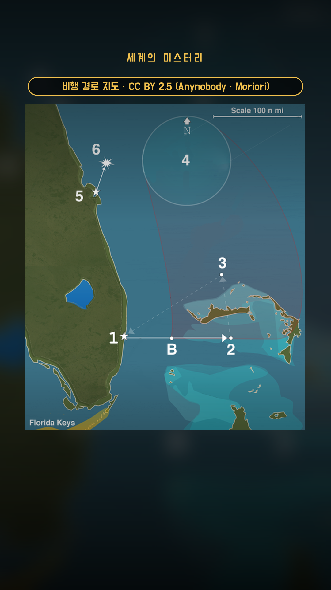

61초 (+ 썸네일 1.5초) · 1080×1920 · 30fps · 자막 y=1480 · 내레이션 ko-KR-Chirp3-HD-Charon · 세계의 미스터리 · 실사 다큐 (실제 사진 · 지도 4장면 + 영상 3장면 + AI 사진 7장면) (Seedream 4.0 사진 → WAN 2.2 영상)

S010:00–0:05 · 5.05초
모션영상 S01, t1 팝 0.1s, t2 도장 0.8s
내레이션1945년 12월, 미 해군 폭격기 다섯 대가 훈련 비행 중 통째로 사라졌어요

S020:05–0:08 · 3.8500000000000005초
모션still 카메라 이동 (사진 · 실제 자료) 0.0s, tag 페이드 0.1s
내레이션플로리다 기지를 떠난 어벤저 폭격기, 탄 사람은 14명이었죠

S030:08–0:13 · 4.699999999999999초
모션still 카메라 이동 (사진 · 실제 자료) 0.0s, who 왼쪽에서 2.6s
내레이션얼마 뒤, 편대장의 다급한 교신이 들어와요 / 「나침반이 둘 다 고장 났다」

S040:13–0:16 · 2.549999999999999초
모션still 카메라 이동 (사진 · 실제 자료) 0.0s, lost 도장 0.3s
내레이션편대는 방향을 잃고 바다 위를 헤맸어요

S050:16–0:20 · 4.050000000000001초
모션영상 S05, night 왼쪽에서 0.2s
내레이션날은 어두워지고 파도는 거세졌고, 저녁 무렵 교신이 끊겼죠

S060:20–0:24 · 4.150000000000002초
모션still 카메라 이동 (사진 · 실제 자료) 0.0s, tag 페이드 0.1s
내레이션구조 비행정이 13명을 태우고 떴지만, 이 비행기도 돌아오지 않았어요

S070:24–0:27 · 3.5초
모션still 카메라 이동 (사진 · 실제 자료) 0.0s, fire 왼쪽에서 0.2s
내레이션근처 유조선은 그날 밤 하늘에서 불길을 봤다고 보고했죠

S080:27–0:34 · 6.600000000000001초
모션still 카메라 이동 (사진 · 실제 자료) 0.0s, search 왼쪽에서 0.2s, n 도장 3.9s
내레이션닷새 동안 넓은 바다를 뒤졌지만 잔해는 하나도 찾지 못했어요 / 모두 27명, 돌아온 사람은 없었어요

S090:34–0:41 · 7.199999999999996초
모션still 카메라 이동 (사진 · 실제 자료) 0.0s, tag 페이드 0.1s
내레이션이 사건은 훗날, 버뮤다 삼각지대 전설의 대표 사례가 돼요 / 하지만 해군 조사는 길을 잃고 연료가 떨어졌을 거라고 봤어요